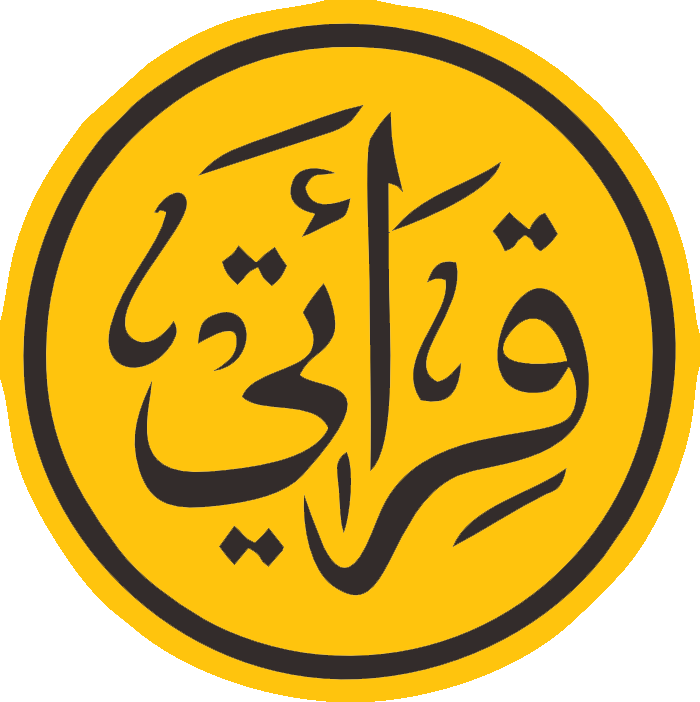

| No | No Registrasi | Nama Lengkap | Kecamatan | Kota |
|---|---|---|---|---|
| 1 | REG-260615-36SE | Ahmad Luqman Al Khakim | Wonosalam | Demak |
| 2 | REG-260614-8H5W | Durrotus Sakdiyah | Kota Soe | Timor Tengah Selatan |
| 3 | REG-260614-4J5C | Endah Sofiati | Demak | Demak |
| 4 | REG-260614-R1Y5 | Fatika Rahma Fadila | Demak | Demak |
| 5 | REG-260617-W7CX | Fitri Suryani | Wedung | Demak |
| 6 | REG-260616-VJ2Y | Inayatussholehah | Demak | Demak |
| 7 | REG-260614-JLPI | Ismah | Wedung | Demak |
| 8 | REG-260617-O0WQ | Khilmi Yatun Nasikhah | Bonang | Demak |
| 9 | REG-260615-KWQN | Luklu'ul Chadiroh | Gajah | Demak |
| 10 | REG-260614-JZON | Mazroatul Khoiroh | Wedung | Demak |
| 11 | REG-260617-QREZ | Mochammad Asnawi | Wedung | Demak |
| 12 | REG-260614-SL5Y | Nailin Nikmah | Gajah | Demak |
| 13 | INV-MTD26-XBEN | Nur Wakhidah | Demak | Demak |
| 14 | REG-260614-D9NN | Nuryati | Demak | Demak |
| 15 | REG-260614-PGVJ | Rahma Syavina Putri | Bonang | Demak |
| 16 | REG-260614-JRWP | Rohayati | Karangtengah | Demak |
| 17 | REG-260615-XN9O | Siti Mutiatus Sholekhah | Bonang | Demak |
| 18 | MTD26-002 | Sri Madurani | Bonang | Demak |
| 19 | REG-260614-W6AH | Sri Purwati | Demak | Demak |
| 20 | REG-260615-F4PY | Sulistriyani | Wonosalam | Demak |
| 21 | REG-260614-AT8R | Ulfatut Tho'ah | Wedung | Demak |
| 22 | REG-260615-QCGW | Ulya Zakiyah | Gubug | Grobogan |
| 23 | REG-260614-2QSU | Ahmad Baihaqi | Wonosalam | Demak |
| 24 | REG-260614-NO2U | Evi Lailatul Mifrokhah | Guntur | Demak |
| 25 | REG-260614-NVUV | Farihatul Udma | Purworejo | Blora |
| 26 | REG-260614-IHG1 | Fatimatuz Zahro | Toroh | Grobogan |
| 27 | REG-260614-137Y | Halimatus Sa'diyah | Karangawen | Demak |
| 28 | REG-260614-1DGC | Laili Nurul Khamidah | Toroh | Grobogan |
| 29 | REG-260614-7NXQ | M. Imdad In'amul Alif | Toroh | Grobogan |
| 30 | REG-260614-IHZA | Maftuhatul Afidah | Penawangan | Grobogan |
| 31 | REG-260614-NE4R | Muhammad Dairobi Al-Ihsan | Gubug | Grobogan |
| 32 | REG-260614-7J6H | Najwa Naily Rahma | Tegowanu | Grobogan |
| 33 | REG-260614-KK60 | Nia Dwi Lestari | Wonosalam | Demak |
| 34 | REG-260614-39SJ | Nofita Indah Wulandari | Godong | Grobogan |
| 35 | REG-260614-R040 | Nur Syafa Aliyatul Khoiriyah | Kedungjati | Grobogan |
| 36 | REG-260614-W3IP | Nurul Maghfiroh | Wonosalam | Demak |
| 37 | REG-260614-CVLA | Siti Iliyana Dewi | Godong | Grobogan |
| 38 | REG-260614-DX6W | Siti Laila Fazidah | Gajah | Demak |
| 39 | REG-260614-1SCQ | Siti Shofia Salma | Brati | Grobogan |
| 40 | REG-260614-3Q10 | Tri Qesa Della Al Setyabit | Kedungjati | Grobogan |
| 41 | REG-260614-UL7H | Umi Farikhah | Karangawen | Demak |
| 42 | REG-260614-EP0K | Zuyyina Indana Zulfa | Palas | Lampung Selatan |
| No | No Registrasi | Nama Lengkap | Kecamatan | Kota |
|---|---|---|---|---|
| 1 | REG-260616-S5D4 | Fina Himatus Sholikhah | Bonang | Demak |
| 2 | REG-260615-CZG6 | Hanik Atul Fitri | Bonang | Demak |
| 3 | REG-260615-SC5N | Laili Fahrun Nisa' | Bonang | Demak |
| 4 | REG-260615-FDQ2 | Maratus Sholikah | Wonosalam | Demak |
| 5 | REG-260615-MXPM | Nurul Hukama' | Demak | Demak |
| 6 | REG-260615-HF04 | Robiatul Walidah | Demak | Demak |
| 7 | REG-260618-UAWG | Khilyatus Sa'ada | Karangawen | Demak |
| 8 | REG-260618-RN6W | Azfi Nafisatun Najwa | Wonotunggal | Batang |
| 9 | REG-260618-OJ78 | Safna Fitrotul Ahla | Wonotunggal | Batang |
| 10 | REG-260618-PH3H | Shidqi Qthrotun Nada | Ngaliyan | Semarang |
| 11 | REG-260616-MDZU | Carrissa Prri Supriyanto | Karangawen | Demak |
| 12 | REG-260616-TR7H | Deswia Sheyla Fatikhah | Godong | Grobogan |
| 13 | REG-260616-KJ39 | Elvia Setya Putri | Toroh | Grobogan |
| 14 | REG-260616-628S | Elvina Naimatul Khoiriyah | Toroh | Grobogan |
| 15 | REG-260616-ERQU | Hamida Zakiyatus Shofiya | Demak | Demak |
| 16 | REG-260616-E4MJ | Livia Nuraini | Toroh | Grobogan |
| 17 | REG-260616-ZLYH | Maelany Prytha Amanda | Tegowanu | Grobogan |
| 18 | REG-260616-GJXQ | Meidina Salwa Nazikhah | Penawangan | Grobogan |
| 19 | REG-260616-1F5E | Nadzifah Millatina | Demak | Demak |
| 20 | REG-260616-ONNN | Safhira Aulia Hadini | Gubug | Grobogan |
| 21 | REG-260616-S821 | Alisa Bunga Amelia | Toroh | Grobogan |
| 22 | REG-260616-9ISW | Dina Wulan Fitriana | Teluk Gelam | Ogan Komering Ilir |
| 23 | REG-260616-Y1IR | Faridatul Lubbal Azkiya | Kebonagung | Demak |
| 24 | REG-260616-Q7ST | Firri Salsabila Maghfiroh | Toroh | Grobogan |
| 25 | REG-260616-M3TM | Fitri Yuni Yanti | Godong | Grobogan |
| 26 | REG-260616-YRC5 | Fitria Anggun Sari | Penawangan | Grobogan |
| 27 | REG-260616-QO8R | Ikhtiarika Karunia Luna Meida | Karangawen | Demak |
| 28 | REG-260616-ECBT | Intan Robiatul Adawiyah | Godong | Grobogan |
| 29 | REG-260616-CG3Z | Khoirotun Nisa | Toroh | Grobogan |
| 30 | REG-260616-WFTE | Luna Sintia Vera | Karangawen | Demak |
| 31 | REG-260616-4GBQ | Nabila Putri Riani | Gubug | Grobogan |
| 32 | REG-260616-1W4P | Naisyifa Maretasya Vislam | Tlogomulyo | Semarang |
| 33 | REG-260616-7UH1 | Najwa Ayu Aqla Akmalia Phasa | Dempet | Demak |
| 34 | REG-260616-766K | Nurma Alivia Humaira | Merauke | Papua Selatan |
| 35 | REG-260616-JE1C | Rohmatul Faizah | Godong | Grobogan |
| 36 | REG-260616-YA9F | Syifa Azcha Shalsabila | Toroh | Grobogan |
| 37 | REG-260616-4BTL | Tachta Alfina Wulandari | Gubug | Grobogan |
| 38 | REG-260616-XCBM | Vina Aprilia Putri | Grobogan | Grobogan |
| 39 | REG-260616-JCDF | Wilda Rifki Silvia | Dempet | Demak |
| 40 | REG-260616-STAC | Yuyun Puji Astuti | Toroh | Grobogan |
| HARI, TGL | WAKTU | KEGIATAN | PENGISI |
|---|---|---|---|
| Selasa 23 Juni 2026 |
07.00 | Daftar Hadir | Panitia |
| 07.00 – 07.30 | Penyampaian Jadwal Acara Metodologi | Panitia | |
| 08.00 – 09.00 | MMQ | Pj. Tashih Qiroati Demak | |
| 09.00 – 09.30 | Istirahat | ||
| 09.30 – 11.00 | Metodologi Pra TK | Tim Metodologi Qiroati Demak | |
| 11.00 – 13.00 | Ishoma | ||
| 13.00 – 15.00 | Lanjutan Metodologi | Tim Metodologi Qiroati Demak | |
| 15.00 – 16.00 | Istirahat | ||
| 16.00 – 17.00 | Lanjutan Metodologi | Tim Metodologi Qiroati Demak | |
| 17.00 – 19.30 | Ishoma | ||
| 19.30 – 20.30 | Penyampaian Sejarah Qiroati Dan Visi Misi | Pj. Amanah Buku Qiroati Demak | |
| 20.30 – 22.00 | Lanjutan Metodologi | Tim Metodologi Qiroati Demak | |
| 22.00 – 05.00 | Istirahat | ||
| Rabu 24 Juni 2026 |
05.00 – 06.00 | MMQ | Pj. Tashih Qiroati Demak |
| 06.30 – 07.30 | Sarapan Pagi | ||
| 07.30 – 08.30 | Sambutan Pembina Korcab Demak | Bapak KH. Muhammad Mahfudz Harir, AH | |
| 08.30 – 09.30 | Lanjutan Metodologi | Tim Metodologi Qiroati Demak | |
| 09.30 – 11.30 | Lanjutan Metodologi | Tim Metodologi Qiroati Demak | |
| 11.30 – 13.00 | ISHOMA | ||
| 13.00 – 15.00 | Lanjutan Metodologi | Tim Metodologi Qiroati Demak | |
| 15.00 – 16.00 | Istirahat Sholat | ||
| 16.00 – 17.00 | Lanjutan Metodologi | Tim Metodologi Qiroati Demak | |
| 17.00 – 19.30 | ISHOMA | ||
| 19.30 – 20.30 | Makhorijul Huruf | Bapak KH. Abdullah Salam, AH | |
| 21.00 – 21.30 | Istirahat | ||
| 21.30 – 22.30 | Lanjutan Metodologi | Tim Metodologi Qiroati Demak | |
| 22.30 – 05.00 | Istirahat | ||
| Kamis 25 Juni 2026 |
05.00 – 07.00 | MMQ sekaligus tahtiman di Maqbaroh Pendiri Pondok BUQ | Pj. Tashih Qiroati Demak |
| 07.00 – 07.30 | Sarapan Pagi | ||
| 07.30 – 09.00 | Lanjutan Metodologi | Tim Metodologi Qiroati Demak | |
| 09.00 – 09.30 | Istirahat | ||
| 09.30 – 11.30 | Lanjutan Metodologi | Tim Metodologi Qiroati Demak | |
| 11.30 – 13.00 | ISHOMA | ||
| 13.00 – 14.30 | Kesekretariatan & Teknis PMQ | Pj. Sekretaris | |
| 14.30 – 15.30 | Penutupan | Panitia & Peserta | |